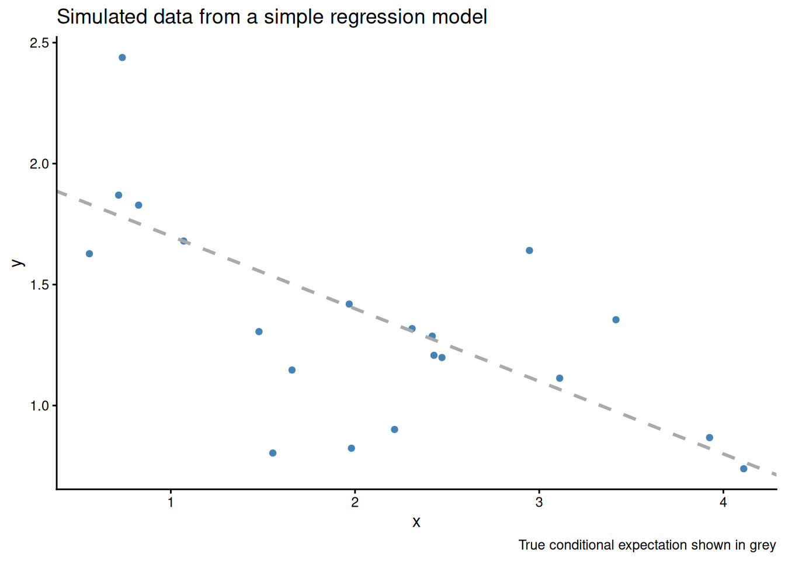
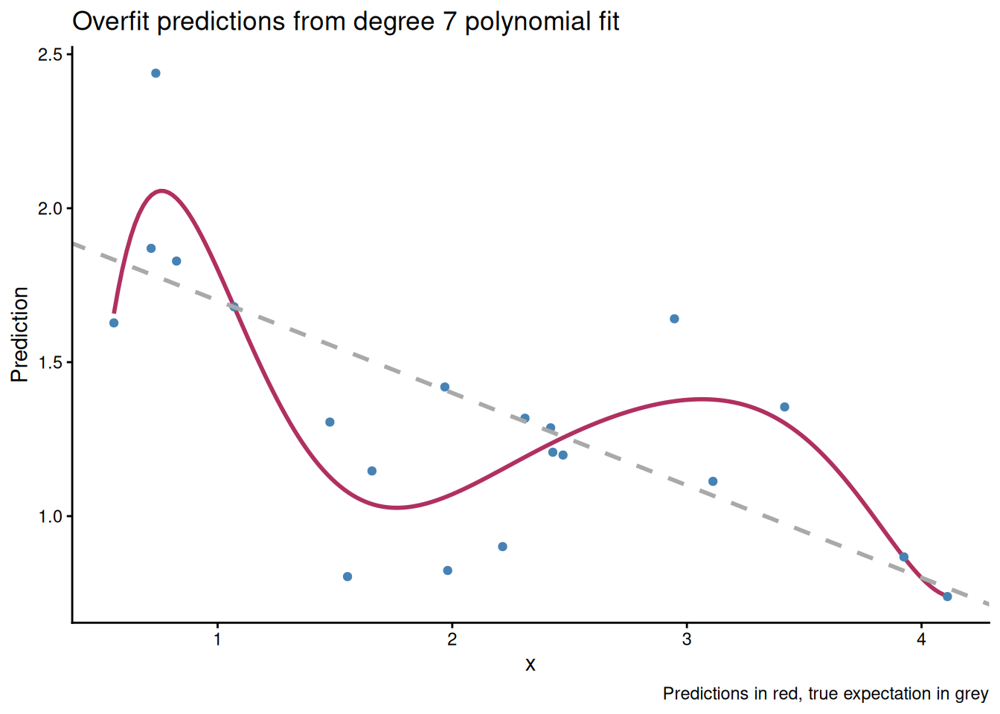
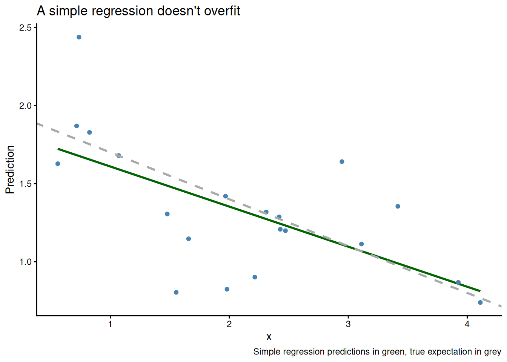
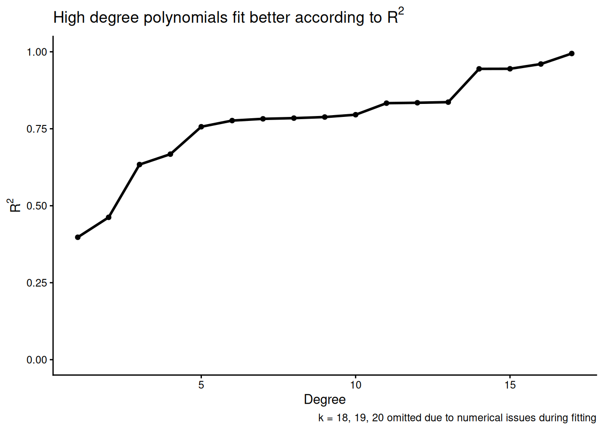
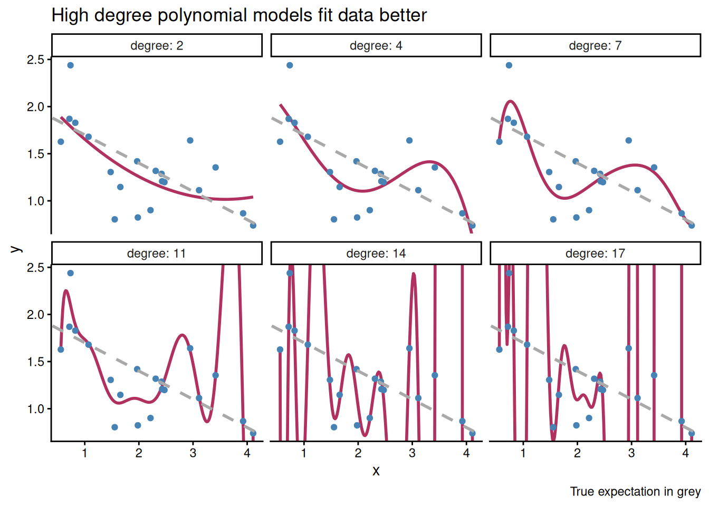
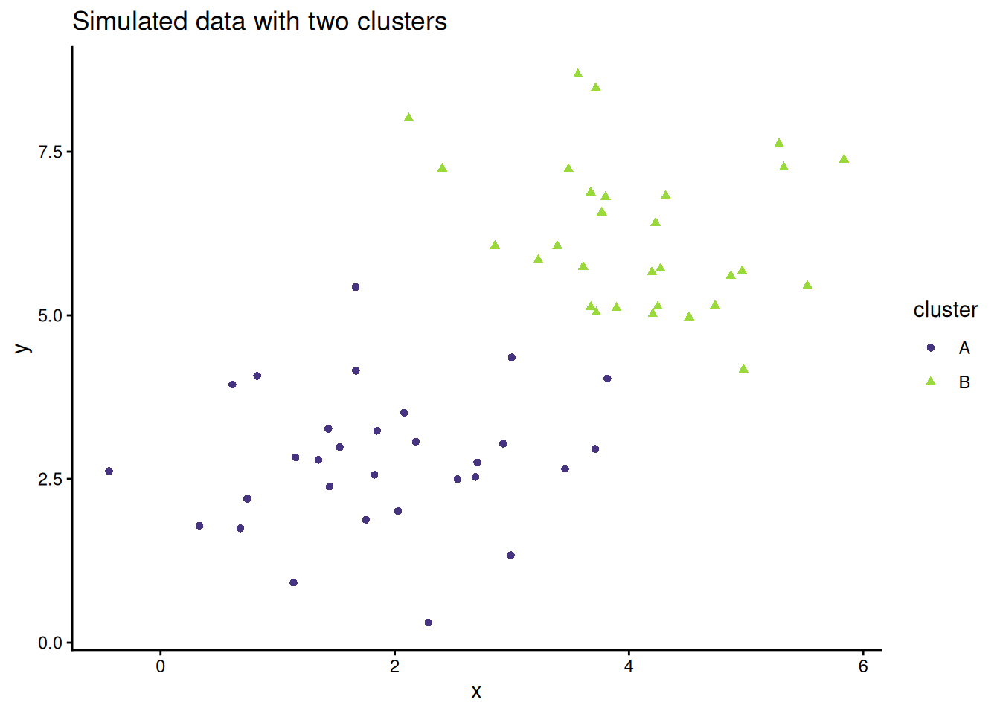
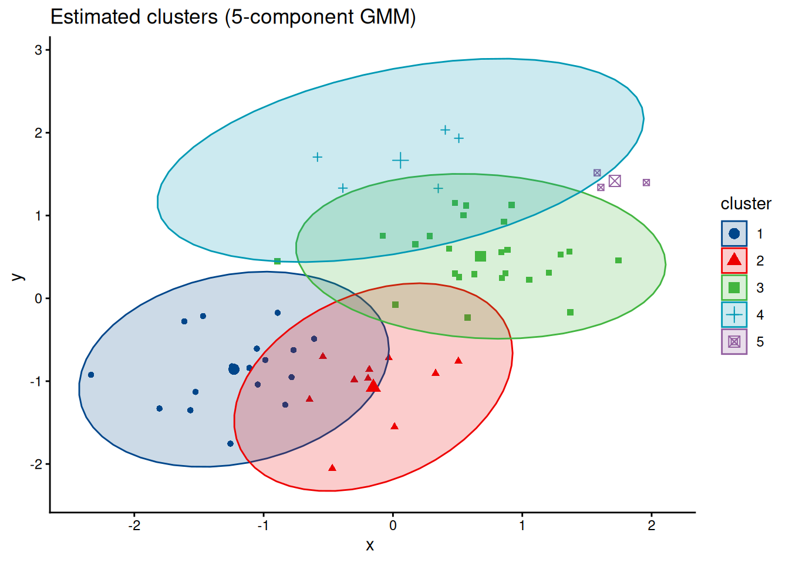

fleshing out intuition about structure in random processes beyond the standard bias-variance decomposition
2020-01-06
This post introduces overfitting, describes how overfitting influences both prediction and inference problems, provides supervised and unsupervised examples of overfitting, and presents a fundamental relationship between train and test error. The goal is to provide some additional intuition beyond material covered in introductory machine learning resources.
Before we begin, I want to play a guessing game. Here’s how it works: I show you two sequences of coin flips. You have to guess which sequence is random and which one I made up.
Okay, here are the first two sequences. Which one do you think is random?
A. THHTTHTTHTHHTHTHHHTT
B. HTTHTHTHHHHHHHHHTTHTLet’s play again. Now the sequences are:
A. HHTHTTHHTTTHHHTTHTTT
B. HTHTTHHHTHHHHTTHHHTTOne last time.
A. HTTHTTHHHTHTHHTTTTHH
B. HHTHTTHHTTTHHTTTHHTHThe answers are in a footnote1. In any case, there’s a simple rule you can use to tell the random sequences from the human generated sequences: the random sequences are the sequences with the longest substring of all heads or all tails.
The gist is that human intuition is bad at solving this problem. Long sequences of all heads or all tails don’t look random–they appear overly structured. But long sequences of heads and tails are in fact quite probable under independent coin flipping! This example illustrates a fundamental fact that human brains often struggle with:
Important
Random processes produce highly structured data.
Until we understand this, it’s hard to build any intuition for overfitting.
A major challenge in probability modeling is that there are two sources of structure in data:
apparent, happenstance structure that originates in the randomness of the data generating process, and
systematic structure inherent in the data generating process.
When we observe structure in data, we don’t know where it came from. If the structure comes from randomness in the data generating process, we would like to ignore it. If the structure is the result of some fundamental latent characteristic of the phenomena we are studying, we want to study it or leverage it to improve our estimates. When we mistakenly confused random, apparent structure for true, systematic structure, we call this mistake overfitting.
Let’s consider a common statistical problem: prediction. Suppose we have twenty pairs of observations (Xi, Yi), and we believe that a Gaussian linear model is appropriate. We would like to estimate 𝔼(Y|X), the conditional expectation of Y given X.
If we use an overly flexible estimator that assumes the data has a more complicated data generating process than it truly does, we can quickly run into overfitting. Consider 20 i.i.d. observations from the simple model:
$$ \begin{align*} Y_i \sim 2 - 0.3 \cdot X_i + \varepsilon_i \\ \varepsilon_i \sim \mathrm{Normal}(0, 0.3^2) \end{align*} $$
The simulated data looks like:

If we consider a 7th degree polynomial fit, our estimate for the conditional expectation is shown in maroon below and looks like:

Our predictions have conformed to random variation in the data rather than systematic variation in the data, and using the polynomial fit for inference or prediction is a bad idea. By contrast, a correctly specified linear model does much better.

Overfitting is a major concern especially when we are choosing between several models. This is because overfit models will look good with respect to some measures of goodness of fit. For example, suppose we want to use the same data from above, and we want to pick a model from several polynomial regression models with differing degrees. We might propose the following estimation procedure:
We plot R2 versus degree below, and see that we would select a very high degree, even though the true data generating process has degree one.

We can visualize some of the models, and see that high order polynomials fit the data better and better while doing a worse and worse job at estimating the systematic structure in the data.

So overfitting is a concern when we consider a single model, and also when we want to compare many different models. Note that we don’t have to perfectly interpolate the data to overfit! Any of the models with degree larger than one results in a bad estimate of 𝔼(Y|X). Typically, models with more parameters are more flexible and more prone to overfitting, but this is not always the case2.
Before we move on, I want to reiterate my point that overfitting occurs in all contexts, not just prediction. Suppose we want to find clusters in bivariate data, and we have reason to believe that a Gaussian mixture model is appropriate. We don’t know how many components are in the mixture, so we start off by trying a model with five components.
When the data has two components, that is, it comes from a simpler data generating process, our estimator will overfit and make several errors at once:
For a concrete example we simulate some bivariate data with two clusters.

But if we assume that the data comes from a more flexible model, our estimated cluster memberships are wonky and off:

Very roughly, there are three tricks we can use to mitigate overfitting.
For the rest of this post, I want to present some basic results on overfitting in a supervised learning context and to give you some intuition on why sample splitting helps.
If you’re interested in penalization approaches, key search phrases are “regularization”, “degrees of freedom” and “bias-variance tradeoff”. Many machine learning textbooks describe estimation procedures and model selection procedures that use some form of penalization. See Belkin et al. (2018) for an overview of some interesting recent developments concerning model complexity. For a more theoretical treatment of penalization in a model selection context you may enjoy the first couple chapters of Massart (2003).
If you come from the machine learning community, you may think overfitting is the difference between predictive performance on training data and test data. To use more statistical language, think of a flexible machine learning estimator for 𝔼(Y|X) like a random forest. We fit the random forest on training data, which is sampled from some data generating process. We hope the random forest only finds systematic structure in noisy, observed conditionals mean of Y given X, but it will also conform to random variations in the conditional mean. These random variations will not be present in the test set, which will have only the underlying systematic structure plus new random variation. Since random variation in the training set results in a poor estimate of the systematic structure in the data generating process, our overfit estimate will make mistakes when looking for systematic structure in the test set. Thus overfitting will reduce predictive performance3. This is sometimes described as the random forest “memorizing the training set”.
It turns out that we can study this phenomena more formally. The math is easiest in a restricted setting, but the intuition generalizes well. First, we assume that our data is independent and identically distributed, where
Yi = f(Xi) + εi.
Here f(Xi) describes how Yi varies systematically with Xi, which we assume is fixed (this is the restrictive assumption). εi represents random error, which we take to be mean zero with variance σ2.
We consider a training set X1, ..., Xn, and obtain predicted values Ŷ1, ..., Ŷn. Then we consider a test set, observed at the same values Xi, but with new random errors εi*. So our test set is the set of observations
Yi* = f(Xi) + εi*.
Let our predicted values at Xi, obtained using only the training set, be Ŷi = f̂(Xi), where f̂ represents our estimator for the conditional mean (i.e. predictive model). Note that these are not just the predicted values for the training set, but also the predicted values for the test set, since Xi is fixed.
Under ℓ2 loss, the training error is
$$ \frac 1n \sum_{i=1}^n (Y_i - \widehat Y_i)^2 $$
and the test error is
$$ \frac 1n \sum_{i=1}^n (Y_i^* - \widehat Y_i)^2. $$
We know that the training error should be less than the test error, and we can in fact formalize the relationship between these two measures. In particular, we have:
$$ \begin{align} \underbrace{ \mathbb{E} \left[ \frac 1n \sum_{i=1}^n \left( Y_i^* - \widehat Y_i \right)^2 \right] }_\text{test error} = \underbrace{ \mathbb{E} \left[ \frac 1n \sum_{i=1}^n \left( Y_i - \hat Y_i \right)^2 \right] }_\text{training error} + \underbrace{ \frac 2n \cdot \sum_{i=1}^n \mathrm{Cov} \left( \widehat Y_i, Y_i \right) }_\text{optimism} \end{align} $$ This relationship holds for most important loss functions. It means tells us that test error, or generalization error, is almost always higher than in-sample error evaluated on the training set. We call the amount by which the training error underestimates the test error the optimism; the more optimism, the greater the discrepancy between in-sample and out-of-sample error.
We’ll discuss the implications the train-test error relationship more in a moment, but first let’s prove it. Feel free to skip the proof, although it relies only on basic properties of the expectation and variance.
Proof. We’ll follow the proof in these course notes by Larry Wasserman. Consider the ith observation. Then
$$ \begin{align} \underbrace{ \mathbb{E} \left[ \left( Y_i - \hat Y_i \right)^2 \right] }_\text{training error at $X_i$} &= \mathrm{Var} \left[ Y_i - \widehat Y_i \right] + \left( \mathbb{E} \left[ Y_i - \widehat Y_i \right] \right)^2 \\ &= \mathrm{Var} \left[ Y_i \right] + \mathrm{Var} \left[ \widehat Y_i \right] - 2 \, \mathrm{Cov} \left[ Y_i, \widehat Y_i \right] + \left( \mathbb{E} \left[ Y_i \right] - \mathbb{E} \left[\widehat Y_i \right] \right)^2 \end{align} $$
and also
$$ \begin{align} \underbrace{ \mathbb{E} \left[ \left( Y_i^* - \widehat Y_i \right)^2 \right] }_\text{test error at $X_i$} &= \mathrm{Var} \left[ Y_i^* - \widehat Y_i \right] + \left( \mathbb{E} \left[ Y_i^* - \widehat Y_i \right] \right)^2 \\ &= \mathrm{Var} \left[ Y_i^* \right] + \mathrm{Var} \left[ \widehat Y_i \right] - 2 \, \mathrm{Cov} \left[ Y_i^*, \widehat Y_i \right] + \left( \mathbb{E} \left[ Y_i^* \right] - \mathbb{E} \left[\widehat Y_i \right] \right)^2. \end{align} $$
Now we consider several implications of the fact that Yi and Yi* are independent and identically distributed. In particular, we have 𝔼(Yi) = 𝔼(Yi*), Var(Yi) = Var(Yi*), and most importantly Cov[Yi*, Ŷi] = Cov[f(Xi) + εi*, f̂(Xi)] = Cov[εi*, f̂(Xi)] = 0. Thus we see
$$ \begin{align} \underbrace{ \mathbb{E} \left[ \left( Y_i^* - \widehat Y_i \right)^2 \right] }_\text{test error at $X_i$} &= \mathrm{Var} \left[ Y_i \right] + \mathrm{Var} \left[ \widehat Y_i \right] + \left( \mathbb{E} \left[ Y_i^* \right] - \mathbb{E} \left[\widehat Y_i \right] \right)^2 \\ &= \underbrace{ \mathbb{E} \left[ \left( Y_i - \widehat Y_i \right)^2 \right] }_\text{training error at $X_i$} + 2 \, \underbrace{ \mathrm{Cov} \left[ Y_i, \widehat Y_i \right] }_\text{how much $\hat f$ memorized $Y_i$} \end{align} $$
where in the last equality we substitute based on our previous decomposition of the training error. Summing over all i and dividing by n finishes the proof.
Let’s consider the implications of the train-test error relationship in two extreme cases. First, suppose that the Ŷi = Yi. This means that our estimator f̂ has perfectly memorized the training set. In this case, there is zero training error, but the optimism is 2σ2, which is pretty much the worst possible case amongst reasonable estimators (in the fixed Xi setting).
In the flip case, the estimator doesn’t memorize the training set at all, so there is no dependence (and thereby no covariance) between the predictions Ŷi and the training labels Yi (really, the errors εi, since that’s the only random component of Yi). This means the estimator f̂ has ignored the random errors εi and has learned only generalizable knowledge!
In fact, it’s often useful to treat
$$ \frac{1}{\sigma^2} \sum_{i=1}^n \mathrm{Cov} \left[ \widehat Y_i, Y_i \right] $$
as a generalized notion of “effective number of parameters” or “degrees of freedom” that measures the complexity of a predictive estimator and its capacity to memorize the training set4.
Finally, this theorem suggests why sample splitting can give us good estimates of test error. If we have an independent dataset, and we assess the performance of the estimator f̂ on the independent dataset, the predictions on this dataset will be independent from the training data, the covariance will be zero, and the optimism term will disappear. Thus we get an unbiased estimate of the loss on new data. This is sometimes called “unbiased risk estimation”5.
Cross validation now is a natural generalization of our hold out estimator. We have an unbiased estimate, so all the error in our estimate of the generalization error comes from variance. If we can generate k independent-ish estimates of generalization error and average them, then we will reduce the variance in the risk estimate. It’s natural to partition the data into k non-overlapping sets, fit a model f̂j on all but the jth partition, and estimate the validation error on the unseen jth portion of the data. In terms of intuition, we then average these “unbiased” and “independent” estimates get a new “unbiased estimate with smaller variance”. In practice, the situation is more complicated, but cross-validation nonetheless turns out to be a good idea6.
Data has structure. Some of this structure is systematic, and some is random. We care about the systematic structure, but we don’t want to confuse the random structure for systematic structure.
Once we start estimating things, we need to be careful about how flexible we allow our models to be. This is true for both inferential and predictive modeling. If we allow our models to be more flexible than the true data generating process, we will mistake random structure for systematic structure. On the flip side, if we use models that don’t contain the true data generating process, we won’t capture all the systematic structure in the data (and we can also confuse the systematic and random structure).
In the prediction context, we saw that test error is higher than training error due to covariance between predictions and random errors in the training set. Hopefully this example demonstrates how easy it is to confuse systematic error and random error, and provides some intuition that you can use when analyzing data down the line.
When Xi is random, the intuition about the train-test performance relationship is pretty much the same as for the fixed Xi case, but the randomness in Xi contributes some additional terms to the test set error. Rosset and Tibshirani (2017) discusses these additional terms.
Note that getting good estimates of risk is a key element of model selection, but that cross validation is not a silver bullet. For example Shao (1993) proves the cross validation isn’t consistent for selecting amongst linear models, and Benavoli et al. (2017) and Lei (2017) discuss the need for additional modeling of cross-validated risk estimates to find the most predictive model. Section 2 of Lei (2017) is an especially eloquent introduction to cross-validation7. Roberts et al. (2017) is a nice introduction to specialized types of cross validation that respect independence structures found in spatial, temporal and network data. Vehtari, Gelman, and Gabry (2017) presents modern Bayesian approaches to sample splitting for model selection, and this blog post by Dan Simpson discusses the same work for non-i.i.d. data.
Chapter 7 of Hastie, Tibshirani, and Friedman (2008) presents an overview of cross-validation in the machine learning context. Arlot and Celisse (2010) is a comprehensive review of results in the cross-validation literature, in particular discussing how cross-validation procedures different when the goal is risk estimation (i.e. determining predictive performance) versus model selection (i.e. choosing hyperparameters). Dudoit and Laan (2005) proves an oracle efficiency result about model selection with cross-validation. Finally, cross-validation was introduced in the now classic Stone (1974).
I’d like to thank Julia Silge for providing feedback on a draft of this post!
The random sequences are B, B, A. First my mom and I made up the three sequences that looked random to us. Then I generated the truly random sequences with the following R code:
set.seed(27)
get_sequence_sample <- function() {
heads_and_tails <- c("H", "T")
seq <- sample(heads_and_tails, size = 20, replace = TRUE)
cat(seq, "\n", sep = "")
}
for (i in 1:3) {
get_sequence_sample()
}Thanks to Dave Anderson for performing this demonstration in his probability class.↩︎
See Piantadosi (2018) for an example of model with a single parameter that can nonetheless perfectly interpolates any finite number of observations.↩︎
Random variation in the test set will case irreducible error that we cannot make disappear. More often than we would like to admit, the irreducible error is large.↩︎
There is also the bizarre scenario when an estimator produces predictions that are anticorrelated with the errors εi, so that Cov[Ŷi, Yi] is negative and test set performance is better than training set performance. If you observe this phenomena on an applied problem, I recommend buying a lottery ticket.↩︎
Alternatively, if we know the form of f̂ and f we could estimate the optimism directly and subtract it off. This is one way to motivate AIC, for example. As a general rule, estimating the optimism and subtracting it off requires much stronger assumptions than cross-validation that are unlikely to hold in practice.↩︎
The risk estimates across the k folds are both biased and dependent. If you fit a model on 80 percent of the full training data, you don’t get an unbiased estimate of the performance when the model is fit on the full data. The bias is simply because more data results in a better estimates. Second, the held-out risk estimates are not independent because the f̂j and f̂k are largely trained on the same data. But averaging them works out okay (Bengio and Grandvalet 2004) for risk estimation, and accounting for blocking across the folds with something like a random intercept model works well for model selection (Wager 2019).↩︎
I highly recommend reading anything by Jing Lei.↩︎